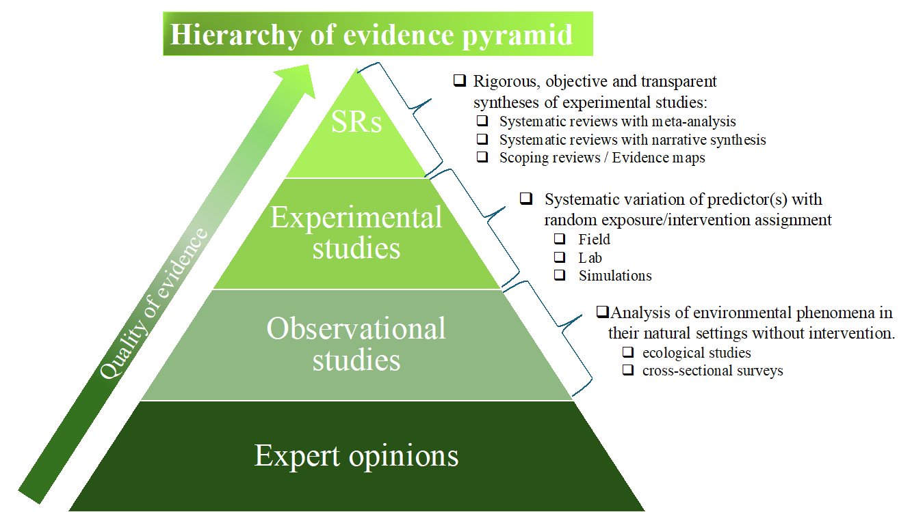

Implementation of research findings into practice is generally slow-paced. It is estimated that that it takes 17–20 years to get clinical innovations into practice (Morris, Wooding, and Grant 2011), whereas fewer than 50% of them ever make it into general usage (Bauer and Kirchner 2020). While primary studies are an important first step in generating evidence, knowledge synthesis (evidence synthesis) serve as a bridge that expedite this process, ensuring that valuable insights from primary research reach those who can benefit most from them.
Take the medical field, for example. Here, evidence synthesis is not just a helpful tool; it’s a cornerstone of clinical decision-making. By systematically accessing, evaluating, and consolidating scientific information, evidence synthesis provides a recognized standard of rigor, objectivity, and transparency. It’s the compass guiding healthcare professionals toward the most effective treatments and interventions.
Interestingly, while evidence synthesis has long been a staple in medical (https://www.cochrane.org/) and social sciences (https://www.campbellcollaboration.org), its adoption in other fields, like environmental sciences, has been surprisingly slow. Yet, recent discussions in journals such as Trends in Ecology & Evolution (Dicks, Walsh, and Sutherland 2014) and Conservation Biology (Kadykalo et al. 2021) highlight its potential in addressing complex questions surrounding policy-making and controversial decisions. By grounding such decisions in the most reliable evidence available, evidence synthesis becomes a vital tool in navigating the intricate landscape of environmental challenges.
Maintaining the integrity of evidence synthesis requires clear standards and meticulous attention to detail. Every step of the process, from article search strategy and their selection criteria, to identifying potential biases in the evidence and scrutinizing the synthesis itself, must be conducted with precision. This meticulous process ensures trust and confidence in the findings, allowing end-users to rely on the synthesized evidence with certainty.
In the environmental sciences, two common forms of evidence synthesis exist:
- Scoping reviews (evidence maps) and
- Systematic reviews
Scoping reviews are ideal for assessing the breadth of knowledge on a specific topic and identifying gaps in the literature. On the other hand, systematic reviews compile all existing evidence on a particular research question, offering a comprehensive overview of the available literature. Systematic reviews are considered at the top of hierarchy of evidence because they offer higher-quality evidence compared to expert opinions, observational or experimental studies (Figure 1).

When primary studies exhibit considerable heterogeneity, a narrative synthesis of evidence provides a cohesive description that draws connections between findings. Conversely, when primary studies share similar design and conduct, a quantitative data synthesis like meta-analysis serves as a powerful tool for drawing robust conclusions.
In conclusion, evidence synthesis provides clarity in ever-growing research. Whether guiding medical practitioners toward optimal patient care or informing policymakers on environmental matters, its role in bridging the gap between research and practice cannot be overstated. By embracing evidence synthesis, researchers can avoid redundant studies, make better use of existing data, and ensure that decisions are based on the most reliable and comprehensive evidence available. This can help minimize waste in research by directing resources towards studies that are more likely to yield meaningful results and contribute significantly to the advancement of knowledge.
Please do not hesitate to if you have any questions!